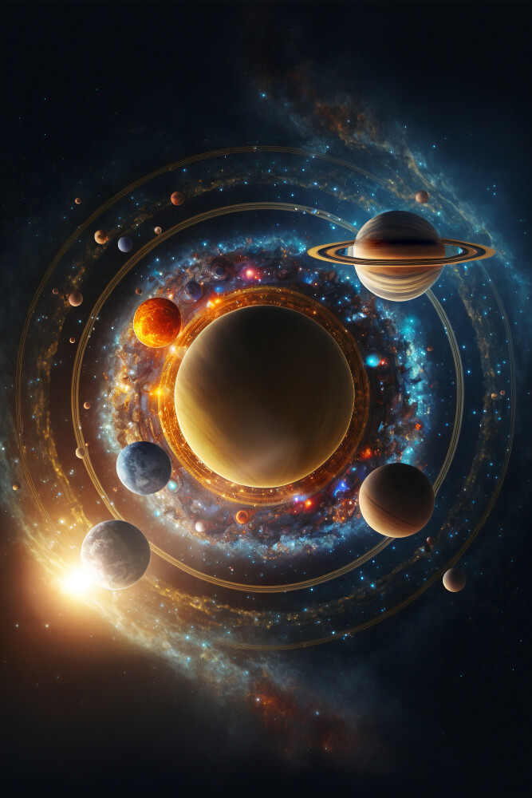
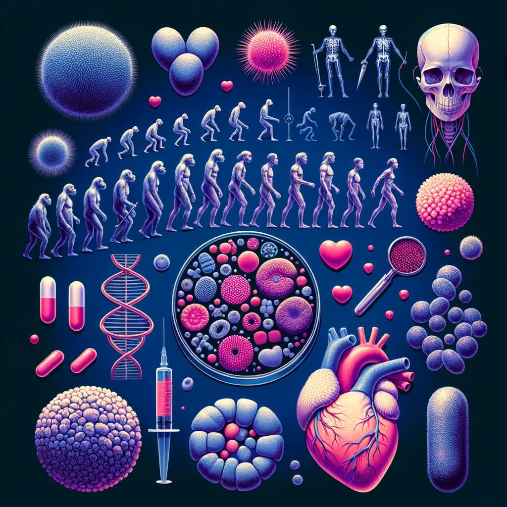

EXHIBITIONS

COSMOLOGY
Discover the wonders of our cosmos in the captivating exhibition, The Sky Above Us. This immersive experience invites you to explore the vastness of the night sky and delve into the mysteries of the universe. You’ll learn about the various constellations, stars, and galaxies visible from Earth, gaining insight into how different cultures have interpreted the skies throughout history.
Trace the path of early navigators who relied on the stars for guidance as they traveled across unknown lands and oceans, using celestial navigation to chart their journeys. The exhibition also takes you on a fascinating journey through the history of solar exploration, from the ancient observations made by Arab traders to the revolutionary discoveries achieved with Galileo’s telescope.
You’ll see how our understanding of the cosmos has evolved over time, culminating in the cutting-edge technology we use today to explore the planets in our solar system and beyond. Whether you’re interested in astronomy, space exploration, or the history of navigation, this exhibition offers a compelling glimpse into our relationship with the cosmos and inspires a deeper appreciation for the universe we inhabit.
EVOLUTION
For centuries, philosophers and scientists have pondered one of humanity’s greatest questions: Where do we come from, and how did we get here? The theory of evolution, first proposed by Charles Darwin, has provided a groundbreaking framework for exploring and understanding our origins and our place in the natural world.
In this exhibition, you’ll discover the incredible story of life on Earth, from the simplest single-celled organisms to the vast diversity of species that exist today. Learn how life began, adapted, and evolved over millions of years, and explore the forces of natural selection that have shaped the creatures around us
Take a journey through time and meet some of the remarkable species that didn’t survive the test of evolution. From the majestic Woolly Mammoth to the enigmatic Dodo, and of course, the mighty dinosaurs, this exhibition offers a fascinating glimpse into the lives of these lost creatures and the ever-changing nature of life on Earth.

BIOLOGY AND MEDICINEY
From micro-organisms to the human body, major breakthroughs in biology are offering us unique insights into the great wonders of the tiny world.
For many people, their life expectancy is much longer and their quality of life much improved, thanks to the growth of our understanding of medicine. Over a series of exhibits, we explore the history of medicine and take a look at some major breakthroughs, including the discovery of penicillin and the first heart transplant.
Many of our great medicinal discoveries have come not only from the lab, but also from observing animals in the wild. Often our fellow creatures have beat us to it.
ROBOTICS AND AI
Apologies for the extensive response. Let's condense it while still elaborating on the significance of the information revolution and the role of robotics and AI:
In today's era of the information revolution, robotics and artificial intelligence (AI) stand as the driving forces reshaping our world. From enhancing daily life through AI-powered home applications to revolutionizing industries with advanced robotics, the impact of these technologies is profound.
Industries have witnessed significant transformations, with robotics streamlining manufacturing processes and AI optimizing operations. Moreover, the integration of robotics and AI has led to the development of humanoid robots like Rob the Robot, showcasing the potential for seamless human-machine interaction.
As we navigate this technological landscape, the possibilities are endless. Robotics and AI continue to push the boundaries of innovation, promising a future where human potential is amplified and where the science fiction of today becomes the reality of tomorrow.
ECOLOGY
As we learn more about the impact humans have on the planet, it becomes increasingly vital for scientists to explore ways to create a sustainable future—not just for ourselves, but for the entire Earth. In the Ecology section of the museum, we delve into the pressing dangers we currently face, including global warming, species extinction, and pollution.
Through informative exhibits, interactive displays, and engaging presentations, we unpack these critical issues to raise awareness about their implications for our planet and future generations. However, it’s not all doom and gloom; we also highlight the positive actions we can all take to contribute to a brighter, more sustainable future.
Visitors will discover innovative solutions, community initiatives, and individual actions that can make a difference. By fostering a sense of responsibility and empowerment, we aim to inspire everyone to become active stewards of the environment and advocate for the preservation of our planet’s diverse ecosystems.
SPECIAL EVENTS AND EXHIBITIONS

DINONIGHTS
Have you ever imagined what it would be like to journey back in time and experience a sleepover in the age of dinosaurs? If so, your dream is about to become a reality! Join us for an unforgettable night at our exciting new dino-themed event, where we’ll whisk you away on a prehistoric adventure like no other.
Prepare to be transported back millions of years to an era when colossal creatures roamed the Earth. From the towering T-Rex to the gentle giants like the Brachiosaurus, you’ll encounter a diverse array of dinosaurs brought to life through immersive exhibits, lifelike animatronics, and interactive experiences that will ignite your imagination.
But the adventure doesn’t stop there! After exploring the wonders of the dinosaur kingdom, settle in for a night under the stars, surrounded by these ancient behemoths. Imagine sleeping soundly while the shadows of long-extinct creatures dance across the walls of our museum, creating an atmosphere unlike any other.
Throughout the night, our knowledgeable staff will be on hand to guide you through the exhibits, share fascinating facts about these magnificent creatures, and answer any questions you may have. Plus, enjoy dino-themed activities, games, and surprises that will make this sleepover a truly unforgettable experience.
Whether you’re a dinosaur enthusiast, a curious explorer, or simply looking for a one-of-a-kind adventure, our DinoNights event promises thrills, excitement, and memories that will last a lifetime. Don’t miss out on this unique opportunity to step back in time and discover the wonders of the dinosaur world!
ONLINE EVENT
SPACE SCIENCES TALKS
Embark on an exhilarating journey through the cosmos with our captivating series of complimentary online activities dedicated to unlocking the mysteries and boundless wonders of space. Delve into the depths of the universe as you explore a variety of engaging and educational experiences designed to ignite your curiosity and expand your understanding of the cosmos.
From virtual stargazing sessions that transport you to distant galaxies to interactive simulations that allow you to witness the birth of stars and the formation of planets, our online activities provide a wealth of opportunities to immerse yourself in the wonders of space. Discover the secrets of black holes, marvel at the breathtaking beauty of nebulae, and learn about the latest advancements in space exploration that are shaping our understanding of the universe.
Whether you’re a seasoned astronomer or a curious novice, our online activities cater to all levels of interest and expertise, ensuring that everyone can participate and enjoy. Join us as we journey to the furthest reaches of the universe, uncovering its hidden treasures and unlocking the secrets of its vast expanse. Prepare to be inspired, amazed, and enthralled as you embark on this unforgettable cosmic adventure!
ENERGETICA EXHIBITION ON LOAN
Prepare to be awed as the renowned Energetica exhibition, on loan from the esteemed NEMO Science Museum in Amsterdam, makes its grand debut at the Community Science Museum. This captivating showcase invites visitors on an immersive journey into the fascinating world of energy, offering a series of dynamic installations that vividly demonstrate the power of the elements and our remarkable ability to harness them for the greater good.
Step into a realm where science meets spectacle as you explore a diverse range of exhibits designed to showcase the extraordinary potential of renewable energy sources. Marvel at the ingenuity of solar energy as it effortlessly powers lighting fixtures, illuminating the path toward a sustainable future. Experience the sheer force of nature firsthand at the mesmerizing “Wind Island,” where towering turbines harness and control the mighty winds to generate power with astonishing efficiency.
But the wonders of Energetica don’t stop there. Venture further into this immersive exhibition and discover a wealth of interactive displays, informative demonstrations, and engaging activities that provide deeper insights into the principles of energy generation, conservation, and innovation. From hydroelectricity to geothermal power, each installation offers a glimpse into the diverse array of renewable resources that hold the key to shaping a cleaner, greener world for generations to come.
Join us as we embark on this exhilarating exploration of energy at the Community Science Museum. Whether you’re a seasoned environmental enthusiast or simply curious about the power of nature, Energetica promises to enlighten, inspire, and leave you with a newfound appreciation for the incredible forces that shape our world. Don’t miss your chance to experience this extraordinary exhibition—it’s an electrifying adventure you won’t soon forget!